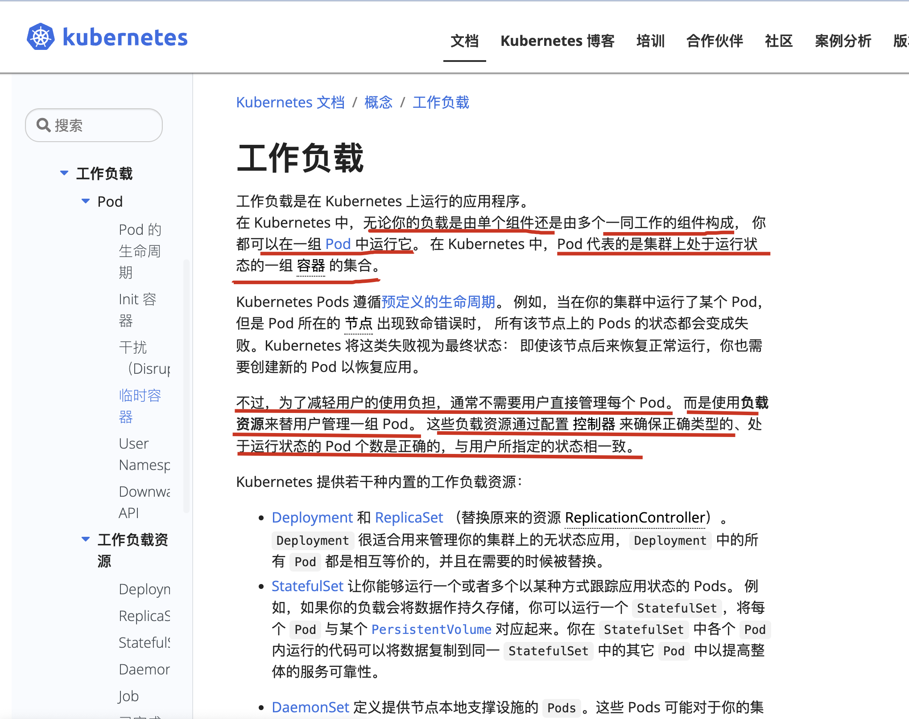
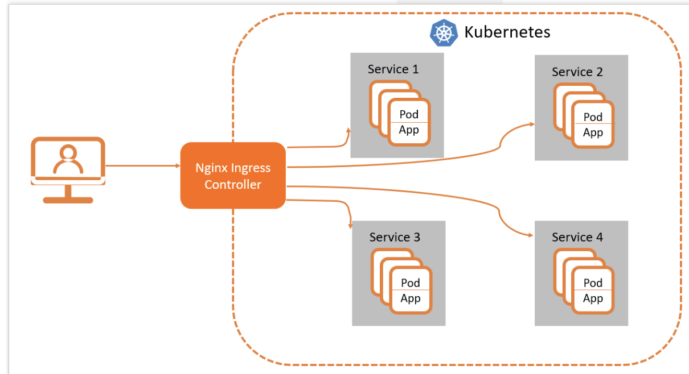
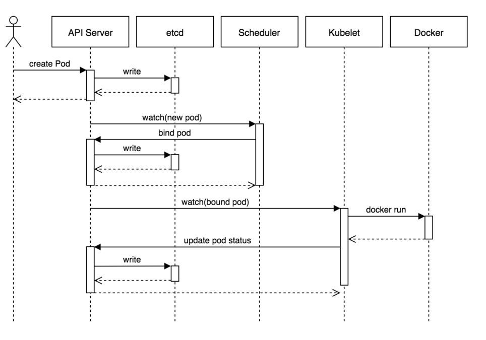
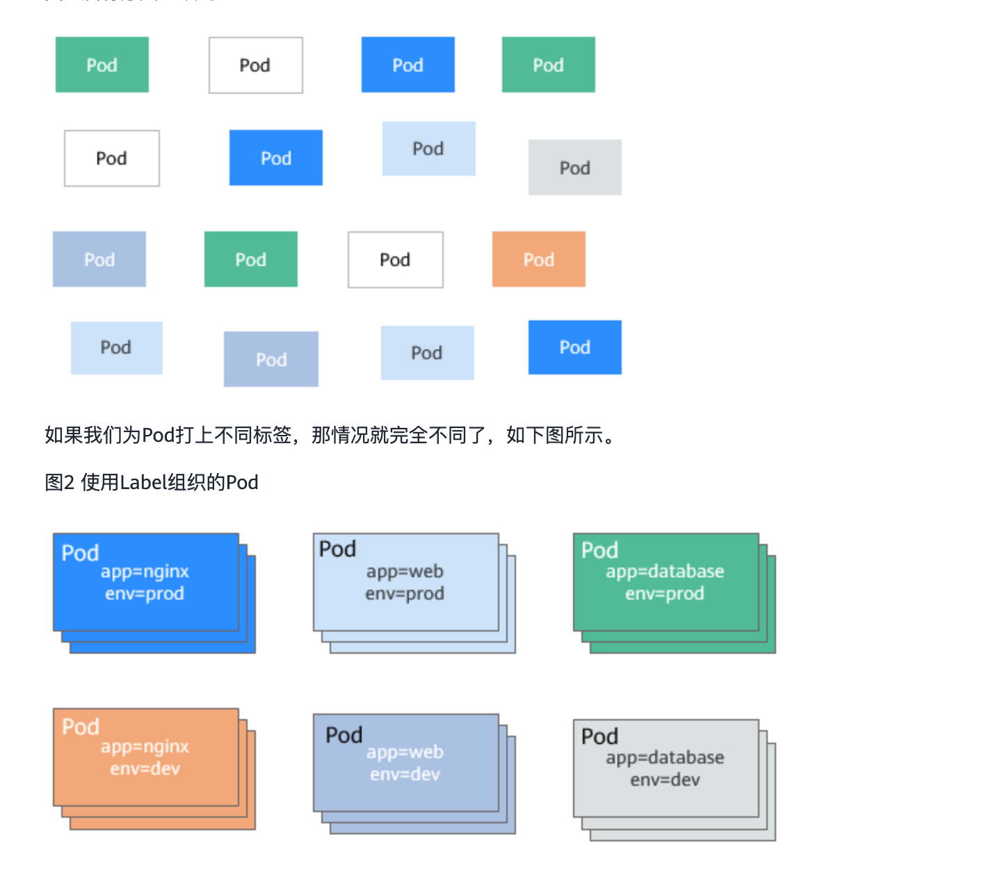

02_k8s资源清单
再安装好k8s之后，本章开始学习k8s的具体使用玩法。
重点介绍如何使用Workload管理业务应用的生命周期，实现服务不中断的滚动更新，通过服务发现和集群内负载均衡来实现集群内部的服务间访问，并通过ingress实现外部使用域名访问集群内部的服务。
学习过程中会逐步对Django项目做k8s改造，从零开始编写所需的资源文件。
通过本章的学习，学员会掌握高可用k8s集群的搭建，同时Django demo项目已经可以利用k8s的控制器、服务发现、负载均衡、配置管理等特性来实现生命周期的管理。
前面也说过，纯容器化部署的问题。
业务容器数量庞大，哪些容器部署在哪些节点，使用了哪些端口，如何记录、管理，需要登录到每台机器去管理？
跨主机通信，多个机器中的容器之间相互调用如何做，iptables规则手动维护？
跨主机容器间互相调用，配置如何写？写死固定IP+端口？
如何实现业务高可用？多个容器对外提供服务如何实现负载均衡？
容器的业务中断了，如何可以感知到，感知到以后，如何自动启动新的容器?
如何实现滚动升级保证业务的连续性？
......
因此就得引入容器管理平台，k8S是目前主流的平台工具。
1.k8s常用资源分类
1.1 工作负载workloads

https://kubernetes.io/zh-cn/docs/concepts/workloads/
简单说使用k8s来发布应用主要就是选用哪种pod控制器来管理、运行pod。
那么就是如下几种控制器类型。
Deployment 和 ReplicaSet （替换原来的资源 ReplicationController）。 Deployment 很适合用来管理你的集群上的无状态应用，Deployment 中的所有 Pod 都是相互等价的，并且在需要的时候被替换。
StatefulSet 让你能够运行一个或者多个以某种方式跟踪应用状态的 Pods。 例如，如果你的负载会将数据作持久存储，你可以运行一个 StatefulSet，将每个 Pod 与某个 PersistentVolume 对应起来。你在 StatefulSet 中各个 Pod 内运行的代码可以将数据复制到同一 StatefulSet 中的其它 Pod 中以提高整体的服务可靠性。
DaemonSet 定义提供节点本地支撑设施的 Pods。这些 Pods 可能对于你的集群的运维是 非常重要的，例如作为网络链接的辅助工具或者作为网络 插件 的一部分等等。每次你向集群中添加一个新节点时，如果该节点与某 DaemonSet 的规约匹配，则控制面会为该 DaemonSet 调度一个 Pod 到该新节点上运行。
Job 和 CronJob。 定义一些一直运行到结束并停止的任务。Job 用来表达的是一次性的任务，而 CronJob 会根据其时间规划反复运行。
提问？
k8s有哪些工作负载？
1.2 服务发现、负载均衡
service
将运行在一组 Pods 上的应用程序公开为网络服务的抽象方法。
使用 Kubernetes，你无需修改应用程序即可使用不熟悉的服务发现机制。
Kubernetes 为 Pod 提供自己的 IP 地址，并为一组 Pod 提供相同的 DNS 名， 并且可以在它们之间进行负载均衡。
https://kubernetes.io/zh-cn/docs/concepts/services-networking/service/
https://kubernetes.io/zh-cn/docs/concepts/services-networking/ingress/
Ingress 是对集群中服务的外部访问进行管理的 API 对象，典型的访问方式是 HTTP。
Ingress 可以提供负载均衡、SSL 终结和基于名称的虚拟托管。
Ingress-nginx就是k8s集群下的负载均衡器软件。
https://kubernetes.io/zh-cn/docs/concepts/services-networking/ingress/#what-is-ingress

1.3 配置资源、存储资源
配置资源
https://kubernetes.io/zh-cn/docs/concepts/configuration/configmap/
ConfigMap 是一种 API 对象，用来将非机密性的数据保存到键值对中。使用时， Pods 可以将其用作环境变量、命令行参数或者存储卷中的配置文件。
ConfigMap 将你的环境配置信息和 容器镜像 解耦，便于应用配置的修改。
注意：
ConfigMap 并不提供保密或者加密功能。 如果你想存储的数据是机密的，请使用 Secret， 或者使用其他第三方工具来保证你的数据的私密性，而不是用 ConfigMap。
存储资源
https://kubernetes.io/zh-cn/docs/concepts/storage/persistent-volumes/
Container 中的文件在磁盘上是临时存放的，这给 Container 中运行的较重要的应用程序带来一些问题。
问题之一是当容器崩溃时文件丢失。
kubelet 会重新启动容器，但容器会以干净的状态重启。
第二个问题会在同一 Pod 中运行多个容器并共享文件时出现。
Kubernetes 卷（Volume） 这一抽象概念能够解决这两个问题。
1.4 集群内置资源分类
Namespace
Node
ROle
ClusterRole
RoleBinding
ClusterRoleBinding
2.资源配置清单
2.1 k8s资源清单
声名式管理k8s
https://kubernetes.io/zh-cn/docs/tasks/manage-kubernetes-objects/declarative-config/
docker时代、我们都有两种管理容器的方法
1. docker run
2. docker-compose.yml
很明显docker-compose.yml里面提前声明好需要哪些容器、哪些配置文件、镜像、以及预先定义好环境变量等信息，都更为高级。
k8s也是一样，除了直接基于镜像运行最终的pod以外，也同样可以使用yaml文件来描述所需创建的k8s资源。
并且yaml格式更容易阅读、理解，可以直观得知创建的集群资源信息。
最后，关于yaml的编写，到底应该写哪些资源，按什么要求去写
这就要看官网给的【k8s对象】文档
https://kubernetes.io/zh-cn/docs/concepts/overview/working-with-objects/kubernetes-objects/
命令查看k8s某个资源的对象解释
kubectl explain pod # 查看pod是什么，有哪些字段
kubectl explain pod.spec # 查看pod所有的规范
kubectl explain pod.spec.volumes # 查看pod关于存储的所有可设置的字段
2.2 理解集群资源
组件是为了支撑k8s平台的运行，安装好的软件。
资源是如何去使用k8s的能力的定义。比如，k8s可以使用Pod来管理业务应用，那么Pod就是k8s集群中的一类资源，集群中的所有资源可以提供如下方式查看：
[root@k8s-master-10 ~]#kubectl api-resources |wc -l
55
有50多个组件
3.如何理解namespace
命名空间，集群内一个虚拟的概念，类似于资源池的概念，一个池子里可以有各种资源类型，绝大多数的资源都必须属于某一个namespace。
集群初始化安装好之后，会默认有如下几个namespace：
[root@k8s-master-10 ~]#kubectl get namespaces
NAME STATUS AGE
default Active 27h
kube-flannel Active 23h
kube-node-lease Active 27h
kube-public Active 27h
kube-system Active 27h
在不同的ns下的资源，需要用-n参数，主动指定ns环境，才能看到对应资源池下的内容。
- 所有NAMESPACED的资源，在创建的时候都需要指定namespace，若不指定，默认会在default命名空间下
- 相同namespace下的同类资源不可以重名，不同类型的资源可以重名
- 不同namespace下的同类资源可以重名
- 通常在项目使用的时候，我们会创建带有业务含义的namespace来做逻辑上的整合
3.1 kubectl的使用
类似于docker，kubectl是命令行工具，用于与APIServer交互，内置了丰富的子命令，功能极其强大。
https://kubernetes.io/docs/reference/kubectl/overview/
$ kubectl -h
$ kubectl get -h
$ kubectl create -h
$ kubectl create namespace -h
3.2 pod工作流程
- 用户准备一个资源文件（记录了业务应用的名称、镜像地址等信息），通过调用APIServer执行创建Pod
- APIServer收到用户的Pod创建请求，将Pod信息写入到etcd中
- 调度器通过list-watch的方式，发现有新的pod数据，但是这个pod还没有绑定到某一个节点中
- 调度器通过调度算法，计算出最适合该pod运行的节点，并调用APIServer，把信息更新到etcd中
- kubelet同样通过list-watch方式，发现有新的pod调度到本机的节点了，因此调用容器运行时，去根据pod的描述信息，拉取镜像，启动容器，同时生成事件信息
- 同时，把容器的信息、事件及状态也通过APIServer写入到etcd中
架构设计的几点思考
- 系统各个组件分工明确(APIServer是所有请求入口，CM是控制中枢，Scheduler主管调度，而Kubelet负责运行)，配合流畅，整个运行机制一气呵成。
- 除了配置管理和持久化组件ETCD，其他组件并不保存数据。
- 意味
除ETCD外其他组件都是无状态的。 - 因此从架构设计上对kubernetes系统高可用部署提供了支撑。
- 意味
- 同时因为组件无状态，组件的升级，重启，故障等并不影响集群最终状态，只要组件恢复后就可以从中断处继续运行。
- 各个组件和kube-apiserver之间的数据推送都是通过list-watch机制来实现。
https://zhuanlan.zhihu.com/p/59660536
理解 K8S 的设计精髓之 List-Watch机制和Informer模块

4.使用资源清单创建POD
docker调度的是容器，在k8s集群中，最小的调度单元是Pod（豆荚）
为什么引入Pod
与容器引擎解耦
Docker、Rkt。平台设计与引擎的具体的实现解耦
多容器共享网络|存储|进程 空间, 支持的业务场景更加灵活
命令行创建pod
kubectl create deployment nginx --image=nginx:alpine
kubectl get pod -o wide
[root@k8s-master-10 ~]#kubectl get po -o wide
NAME READY STATUS RESTARTS AGE IP NODE NOMINATED NODE READINESS GATES
nginx-565785f75c-jmszl 1/1 Running 0 30s 10.2.2.2 k8s-node-12 <none> <none>
yuchao-nginx 1/1 Running 1 27h 10.2.1.3 k8s-node-11 <none> <none>
[root@k8s-master-10 ~]#
导出pod配置为yaml清单
这是一个获取yaml的技巧
# 指定导出某个pod的yaml文件
[root@k8s-master-10 ~]#kubectl get pod yuchao-nginx -o yaml > yuchao-nginx-pod.yaml
# 查看pod的label信息
[root@k8s-master-10 ~]#kubectl get pod yuchao-nginx --show-labels
查看精简后的pod-yaml
# 查看精简后的yaml
apiVersion: v1
kind: Pod
metadata:
labels:
run: yuchao-nginx
spec:
containers:
- image: nginx:1.17.9
imagePullPolicy: IfNotPresent
name: yuchao-nginx
yaml转json
{
"apiVersion": "v1",
"kind": "Pod",
"metadata": {
"labels": {
"run": "yuchao-nginx"
}
},
"spec": {
"containers": [
{
"image": "nginx:1.17.9",
"imagePullPolicy": "IfNotPresent",
"name": "yuchao-nginx"
}
]
}
}
删除创建的pod
想想该如何删除？直接删除pod好使吗？
[root@k8s-master-10 ~]#kubectl get po
NAME READY STATUS RESTARTS AGE
nginx-565785f75c-jmszl 1/1 Running 0 18m
yuchao-nginx 1/1 Running 1 27h
[root@k8s-master-10 ~]#kubectl delete pod yuchao-nginx
pod "yuchao-nginx" deleted
[root@k8s-master-10 ~]#
[root@k8s-master-10 ~]#kubectl get po
NAME READY STATUS RESTARTS AGE
nginx-565785f75c-jmszl 1/1 Running 0 19m
[root@k8s-master-10 ~]#
貌似可以？再删这个nginx试试？
[root@k8s-master-10 ~]#kubectl delete po nginx-565785f75c-jmszl
pod "nginx-565785f75c-jmszl" deleted
[root@k8s-master-10 ~]#
[root@k8s-master-10 ~]#
[root@k8s-master-10 ~]#kubectl get po
NAME READY STATUS RESTARTS AGE
nginx-565785f75c-48jhc 1/1 Running 0 84s
[root@k8s-master-10 ~]#
哎我去？干不掉？为啥？副本控制器啊!!你的nginx pod谁创建的啊？deployment啊！！
[root@k8s-master-10 ~]#kubectl get deployments.apps -o wide
NAME READY UP-TO-DATE AVAILABLE AGE CONTAINERS IMAGES SELECTOR
nginx 1/1 1 1 24m nginx nginx:alpine app=nginx
[root@k8s-master-10 ~]#
查看deployment和pod
[root@k8s-master-10 ~]#kubectl get deployments.apps -o wide
NAME READY UP-TO-DATE AVAILABLE AGE CONTAINERS IMAGES SELECTOR
nginx 1/1 1 1 24m nginx nginx:alpine app=nginx
[root@k8s-master-10 ~]#
[root@k8s-master-10 ~]#kubectl get po --show-labels -owide
NAME READY STATUS RESTARTS AGE IP NODE NOMINATED NODE READINESS GATES LABELS
nginx-565785f75c-48jhc 1/1 Running 0 2m34s 10.2.1.4 k8s-node-11 <none> <none> app=nginx,pod-template-hash=565785f75c
删除deployment
[root@k8s-master-10 ~]#kubectl delete deployments.apps nginx
deployment.apps "nginx" deleted
[root@k8s-master-10 ~]#
[root@k8s-master-10 ~]#kubectl get po
No resources found in default namespace.
[root@k8s-master-10 ~]#kubectl get deployments.apps
No resources found in default namespace.
[root@k8s-master-10 ~]#
基于资源清单创建资源
[root@k8s-master-10 ~]#cat nginx-pod.yaml
# 查看精简后的yaml
apiVersion: v1
kind: Pod
metadata:
name: yuchao-nginx
labels:
run: yuchao-nginx
spec:
containers:
- image: nginx:1.17.9
imagePullPolicy: IfNotPresent
name: yuchao-nginx
[root@k8s-master-10 ~]#
[root@k8s-master-10 ~]#
[root@k8s-master-10 ~]#kubectl create -f nginx-pod.yaml
pod/yuchao-nginx created
[root@k8s-master-10 ~]#
解释
# 查看精简后的yaml
apiVersion: v1 # api语法版本
kind: Pod # 资源类型
metadata: # 资源元属性
name: yuchao-nginx # pod的名字
labels: # 标签身份，key-value
run: nginx
spec: # pod有关的参数，基于explain可以看到具体字段，不是瞎写的
containers: # pod用于运行容器的，容器信息你填不填？
- image: nginx:1.17.9 # 镜像信息
imagePullPolicy: IfNotPresent # 镜像拉取策略，本地有了就不下载了
name: yuchao-nginx # 容器命名规则
运行结果
[root@k8s-master-10 ~]#kubectl get po -o wide
NAME READY STATUS RESTARTS AGE IP NODE NOMINATED NODE READINESS GATES
yuchao-nginx 1/1 Running 0 36s 10.2.1.5 k8s-node-11 <none> <none>
查看pod具体字段的详细解释
[root@k8s-master-10 ~]#kubectl explain pod.spec.containers.ports
5.标签玩法
https://support.huaweicloud.com/basics-cce/kubernetes_0011.html
5.1 Node标签的设置
Label 是附着到 object 上（例如 Pod）的键值对。可以在创建 object 的时候指定，也可以在 object 创建后随时指定。Labels 的值对系统本身并没有什么含义，只是对用户才有意义。
当资源变得非常多的时候，如何分类管理就非常重要了，Kubernetes提供了一种机制来为资源分类，那就是Label（标签）。Label非常简单，但是却很强大，Kubernetes中几乎所有资源都可以用Label来组织。
Label的具体形式是key-value的标记对，可以在创建资源的时候设置，也可以在后期添加和修改。
以Pod为例，当Pod变得多起来后，就显得杂乱且难以管理，如下图所示。
图解label作用

语法和字符集
Label key 的组成：
- 不得超过 63 个字符
- 可以使用前缀，使用 / 分隔，前缀必须是 DNS 子域，不得超过 253 个字符，系统中的自动化组件创建的 label 必须指定前缀，
kubernetes.io/由 kubernetes 保留 - 起始必须是字母（大小写都可以）或数字，中间可以有连字符、下划线和点
Label value 的组成：
- 不得超过 63 个字符
- 起始必须是字母（大小写都可以）或数字，中间可以有连字符、下划线和点
Label selector
Label 不是唯一的，很多 object 可能有相同的 label。
通过 label selector，客户端／用户可以指定一个 object 集合，通过 label selector 对 object 的集合进行操作。
Label selector 有两种类型：
- equality-based ：可以使用
=、==、!=操作符，可以使用逗号分隔多个表达式 - set-based ：可以使用
in、notin、!操作符，另外还可以没有操作符，直接写出某个 label 的 key，表示过滤有某个 key 的 object 而不管该 key 的 value 是何值，!表示没有该 label 的 object
查看Node的标签信息
[root@k8s-master-10 ~]#kubectl get nodes --show-labels
NAME STATUS ROLES AGE VERSION LABELS
k8s-master-10 Ready master 32h v1.19.3 beta.kubernetes.io/arch=amd64,beta.kubernetes.io/os=linux,kubernetes.io/arch=amd64,kubernetes.io/hostname=k8s-master-10,kubernetes.io/os=linux,node-role.kubernetes.io/master=
k8s-node-11 Ready <none> 28h v1.19.3 beta.kubernetes.io/arch=amd64,beta.kubernetes.io/os=linux,kubernetes.io/arch=amd64,kubernetes.io/hostname=k8s-node-11,kubernetes.io/os=linux
k8s-node-12 Ready <none> 28h v1.19.3 beta.kubernetes.io/arch=amd64,beta.kubernetes.io/os=linux,kubernetes.io/arch=amd64,kubernetes.io/hostname=k8s-node-12,kubernetes.io/os=linux
给Node打上新标签
[root@k8s-master-10 ~]#kubectl label nodes k8s-node-11 diskType=ssd
node/k8s-node-11 labeled
[root@k8s-master-10 ~]#kubectl label nodes k8s-node-12 serviceType=db
node/k8s-node-12 labeled
查看
[root@k8s-master-10 ~]#kubectl get nodes --show-labels
NAME STATUS ROLES AGE VERSION LABELS
k8s-master-10 Ready master 32h v1.19.3 beta.kubernetes.io/arch=amd64,beta.kubernetes.io/os=linux,kubernetes.io/arch=amd64,kubernetes.io/hostname=k8s-master-10,kubernetes.io/os=linux,node-role.kubernetes.io/master=
k8s-node-11 Ready <none> 28h v1.19.3 beta.kubernetes.io/arch=amd64,beta.kubernetes.io/os=linux,diskType=ssd,kubernetes.io/arch=amd64,kubernetes.io/hostname=k8s-node-11,kubernetes.io/os=linux
k8s-node-12 Ready <none> 28h v1.19.3 beta.kubernetes.io/arch=amd64,beta.kubernetes.io/os=linux,kubernetes.io/arch=amd64,kubernetes.io/hostname=k8s-node-12,kubernetes.io/os=linux,serviceType=db
[root@k8s-master-10 ~]#
修改pod清单，使用node选择器
默认pod是scheduler自动选择的node
我们也可以指定具体的机器Node
yaml
apiVersion: v1
kind: Pod
metadata:
name: yuchao-nginx
labels:
run: yuchao-nginx
spec:
containers:
- name: yuchao-nginx
image: nginx:1.14.0
imagePullPolicy: IfNotPresent
ports:
- name: http
containerPort: 80
nodeSelector:
#diskType: ssd
serviceType: db
# 别忘记用explain
# 这是提示你自己，yaml改如何写字段的方法
[root@k8s-master-10 ~]#kubectl explain pod.spec |grep -E '(nodeSelector|containers)'
基于NodeSelector创建pod
[root@k8s-master-10 ~]#kubectl get po -o wide
NAME READY STATUS RESTARTS AGE IP NODE NOMINATED NODE READINESS GATES
yuchao-nginx 1/1 Running 0 18m 10.2.1.5 k8s-node-11 <none> <none>
[root@k8s-master-10 ~]#
删除后，再基于yaml创建
[root@k8s-master-10 ~]#kubectl create -f label-nginx-pod.yaml
pod/yuchao-nginx created
[root@k8s-master-10 ~]#kubectl get po -o wide
NAME READY STATUS RESTARTS AGE IP NODE NOMINATED NODE READINESS GATES
yuchao-nginx 0/1 ContainerCreating 0 6s <none> k8s-node-12 <none> <none>
[root@k8s-master-10 ~]#
# -w参数，检测组件变化
[root@k8s-master-10 ~]#kubectl get po -o wide -w
NAME READY STATUS RESTARTS AGE IP NODE NOMINATED NODE READINESS GATES
yuchao-nginx 0/1 ContainerCreating 0 17s <none> k8s-node-12 <none> <none>
yuchao-nginx 1/1 Running 0 21s 10.2.2.3 k8s-node-12 <none> <none>
修改nginx容器的内容
[root@k8s-master-10 ~]#kubectl exec -it yuchao-nginx -- bash
root@yuchao-nginx:/# echo 'www.yuchaoit.cn' > /usr/share/nginx/html/index.html
root@yuchao-nginx:/# exit
exit
[root@k8s-master-10 ~]#
[root@k8s-master-10 ~]#kubectl get po -o wide
NAME READY STATUS RESTARTS AGE IP NODE NOMINATED NODE READINESS GATES
yuchao-nginx 1/1 Running 0 2m18s 10.2.2.3 k8s-node-12 <none> <none>
[root@k8s-master-10 ~]#
[root@k8s-master-10 ~]#curl 10.2.2.3
www.yuchaoit.cn
[root@k8s-master-10 ~]#
删除Node标签
[root@k8s-master-10 ~]#kubectl label nodes k8s-node-11 diskType-
node/k8s-node-11 labeled
[root@k8s-master-10 ~]#kubectl label nodes k8s-node-12 serviceType-
node/k8s-node-12 labeled
5.2 Pod标签
困境
当pod的数量增多(我们会存在众多的服务), 并且每个服务会部署不同的版本时, 如果没有一个方便管理某一类pod的方法那将是运维地狱,
接下来我们将介绍一种通过标签–label管理pod的方法.(实际上不仅仅是pod, 其他类型的资源也可以有label)
一个pod可以有多个不同的标签, 而且不仅仅是pod, 其他类型的资源也可以有label. 针对pod我们可以设置两个标签, 分别是 app 和 release, 代表它是哪个应用和其版本.
Yaml
apiVersion: v1 # 遵循v1版本的Kubernetes API
kind: Pod # 这个yaml描述的是一个Pod
metadata:
name: yuchao-nginx-v1 # Pod的名称
labels:
release: dev
app: nginx
spec:
containers:
- image: nginx:1.14.0 # 创建容器使用的镜像
name: yuchao-nginx #容器的名称
ports:
- containerPort: 80 # 应用监听的端口, 指定端口是展示性的
protocol: TCP
查看pod的标签信息
[root@k8s-master-10 ~]#kubectl get pod --show-labels
NAME READY STATUS RESTARTS AGE LABELS
yuchao-nginx 1/1 Running 0 15m run=yuchao-nginx
基于资源清单创建新的pod
[root@k8s-master-10 ~]#kubectl create -f label-nginx-pod-v1.yaml
pod/yuchao-nginx-v1 created
查看pod的标签
[root@k8s-master-10 ~]#kubectl get po -o wide --show-labels
NAME READY STATUS RESTARTS AGE IP NODE NOMINATED NODE READINESS GATES LABELS
yuchao-nginx 1/1 Running 0 20m 10.2.2.3 k8s-node-12 <none> <none> run=yuchao-nginx
yuchao-nginx-v1 1/1 Running 0 2m13s 10.2.1.6 k8s-node-11 <none> <none> app=nginx,release=dev
给现有pod添加标签
[root@k8s-master-10 ~]#kubectl label pods yuchao-nginx status=old
pod/yuchao-nginx labeled
[root@k8s-master-10 ~]#
[root@k8s-master-10 ~]#kubectl get po -o wide --show-labels
NAME READY STATUS RESTARTS AGE IP NODE NOMINATED NODE READINESS GATES LABELS
yuchao-nginx 1/1 Running 0 21m 10.2.2.3 k8s-node-12 <none> <none> run=yuchao-nginx,status=old
yuchao-nginx-v1 1/1 Running 0 4m11s 10.2.1.6 k8s-node-11 <none> <none> app=nginx,release=dev
删除标签
[root@k8s-master-10 ~]#
[root@k8s-master-10 ~]#kubectl label pod yuchao-nginx status-
pod/yuchao-nginx labeled
[root@k8s-master-10 ~]#
[root@k8s-master-10 ~]#kubectl label pod yuchao-nginx-v1 release-
pod/yuchao-nginx-v1 labeled
5.3 pod标签实验
Label的形式为key-value形式，使用非常简单，如下，为Pod设置了app=nginx和env=prod两个Label。
apiVersion: v1
kind: Pod
metadata:
name: my-nginx
labels: # 为Pod设置两个Label
app: nginx
env: prod
spec:
containers:
- image: nginx:alpine
name: container-0
resources:
limits:
cpu: 100m
memory: 200Mi
requests:
cpu: 100m
memory: 200Mi
创建pod资源
[root@k8s-master-10 ~]#kubectl create -f pod.yaml
pod/my-nginx created
查看pod以及标签，加上 --show-labels
[root@k8s-master-10 ~]#kubectl get po --show-labels
NAME READY STATUS RESTARTS AGE LABELS
dep-nginx-779c7fd666-cvg8v 1/1 Running 0 8m7s app=dep-nginx,env=dev,pod-template-hash=779c7fd666
my-nginx 1/1 Running 0 53s app=nginx,env=prod
yuchao-nginx 1/1 Running 0 19h run=yuchao-nginx
yuchao-nginx-v1 1/1 Running 0 18h app=nginx
[root@k8s-master-10 ~]#
基于label查询一组pod
# -l 标签选择器
查询线上的一组pod
[root@k8s-master-10 ~]#kubectl get pod -l env=prod --show-labels
NAME READY STATUS RESTARTS AGE LABELS
my-nginx 1/1 Running 0 4m30s app=nginx,env=prod
[root@k8s-master-10 ~]#
[root@k8s-master-10 ~]#kubectl get pod -l env=dev --show-labels
NAME READY STATUS RESTARTS AGE LABELS
dep-nginx-779c7fd666-cvg8v 1/1 Running 0 11m app=dep-nginx,env=dev,pod-template-hash=779c7fd666
[root@k8s-master-10 ~]#
删除一组pod
[root@k8s-master-10 ~]#kubectl get po --show-labels
NAME READY STATUS RESTARTS AGE LABELS
dep-nginx-779c7fd666-cvg8v 1/1 Running 0 12m app=dep-nginx,env=dev,pod-template-hash=779c7fd666
my-nginx 1/1 Running 0 5m9s app=nginx,env=prod
yuchao-nginx 1/1 Running 0 19h run=yuchao-nginx
yuchao-nginx-v1 1/1 Running 0 19h app=nginx
[root@k8s-master-10 ~]#
[root@k8s-master-10 ~]#kubectl delete pod -l app=nginx
pod "my-nginx" deleted
pod "yuchao-nginx-v1" deleted
[root@k8s-master-10 ~]#
修改label
对于已存在的Label，如果要修改的话，需要在命令中带上--overwrite，如下所示。
[root@k8s-master-10 ~]#kubectl label pod yuchao-nginx env=debug --overwrite
pod/yuchao-nginx labeled
[root@k8s-master-10 ~]#
[root@k8s-master-10 ~]#kubectl get po --show-labels
NAME READY STATUS RESTARTS AGE LABELS
dep-nginx-779c7fd666-cvg8v 1/1 Running 0 13m app=dep-nginx,env=dev,pod-template-hash=779c7fd666
yuchao-nginx 1/1 Running 0 19h env=debug,run=yuchao-nginx
[root@k8s-master-10 ~]#
6.写yaml的正确姿势
1.拿来主义，从机器中已有的资源中拿
$ kubectl -n kube-system get po,deployment,ds
修改所需字段即可。
2.学会在官网查找， https://kubernetes.io/docs/home/
3.从kubernetes-api文档中查找， https://kubernetes.io/docs/reference/generated/kubernetes-api/v1.16/#pod-v1-core
4. kubectl explain 查看具体字段含义。